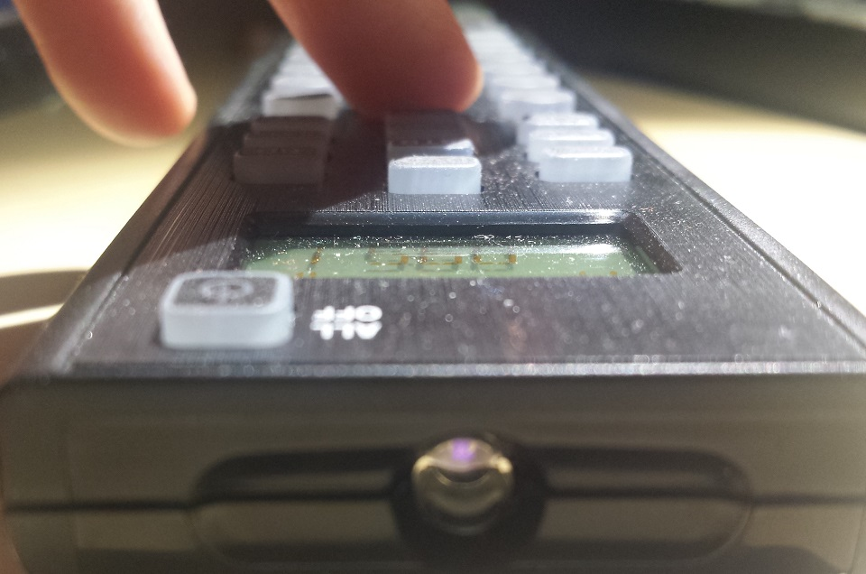

If you ask yourself what infrared is and how a remote control like the one which came with your TV works - this is the page to read. Of course i will not cover everything but it will give you a quick glimpse. If you want to know more about infrared itself you might want to check out the wikipedia article
Binary - this is how everything in our digital home's work. This is by far the easiest method of transmitting information in a machine-readable way, so when the remote controls became ubiquitous most manufacturers decided to send binary codes encoded in infrared light to cover all their device's functions. Initially remotes had very simple codes which grew complex while years passed to avoid interference with other devices like it was common in early days.
As you can see in the picture the signal sent by an infrared remote is a very fast one - So fast that the length of a bit is usually given in µs (microseconds). 1µs = 0.000001s. Each 1 or 0 bit is represented by a different pattern. This pattern is dependent on the format used, but the idea is always the same.
You can make infrared light visible by using a camera. Unlike the human eye they are responsive to infra-red light.
There are multiple ways of saving these patterns into files. On this table i will quickly explain those.
| Format name | Description |
|---|---|
| LIRC | The most common way of saving infrared codes in the Linux world. Usually codes in lirc format contain a header with data like length of light for one and zero, header, repeats, and how a zero and one look like. The codes itself is given in hexadecimal notation (like 0xCCFF) which represents the binary form of the code (only shorter). Some protocols can't be specified because they are too complex. For these lirc raw mode is used, which just contains the on-off time patterns. |
| PRONTO | Originally a proprietary format it is now used very often for programming universal remotes controlles. All Pronto codes start with a header containing the burst pair numbers. A burst pair consists of 2-bytes (e.g. 0010 0040) telling how much time the light should be "on" and "off". Time is not given in msec but in carrier cycles. |
| BINARY | Some datasheet specification use binary notation (010001...). The length is inferred by specifing the protocol |
| RAW | See lirc raw mode.. |
| IRP | Very complex notation, i would not use it ;-). Example: {38.4k,564}<1,-1|1,-3>(16,-8,D:8,S:8,F:8,~F:8,1,^108m,(16,-4,1,^108m)*) [D:0..255,S:0..255=255-D,F:0..255] |